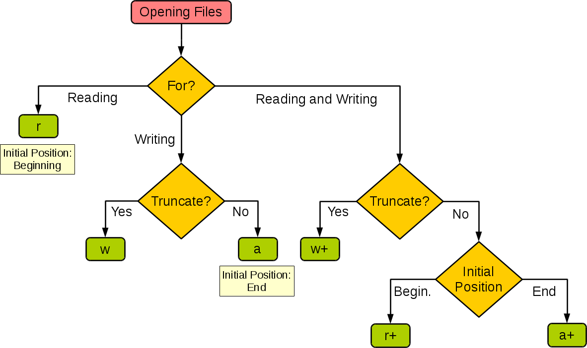

Python I/O de archivos
Este capítulo cubre únicamente las funciones básicas de I/O; para más funciones, consulte la documentación estándar de Python.
Imprimir en pantalla
La forma más sencilla de generar salida es usando la sentencia print, a la cual puedes pasar cero o más expresiones separadas por comas. Esta función convierte las expresiones que le pasas en una expresión de cadena y escribe el resultado en la salida estándar, como se muestra a continuación:
#!/usr/bin/python # -*- coding: UTF-8 -*- print "Python 是一个非常棒的语言，不是吗？"
Tu pantalla estándar mostrará el siguiente resultado:
Python 是一个非常棒的语言，不是吗？
Leer entrada del teclado
Python ofrece dos funciones integradas para leer una línea de texto desde la entrada estándar. La entrada estándar predeterminada es el teclado. A continuación:
- raw_input
- input
Función raw_input
La función raw_input([prompt]) lee una línea desde la entrada estándar y devuelve una cadena (eliminando el salto de línea final):
#!/usr/bin/python
# -*- coding: UTF-8 -*-
str = raw_input("请输入：")
print "你输入的内容是: ", str
Esto te pedirá que ingreses cualquier cadena y luego mostrará la misma cadena en pantalla. Cuando ingresé "Hello Python!", su salida es la siguiente:
请输入：Hello Python！ 你输入的内容是: Hello Python！
Función input
input([prompt])función yraw_input([prompt])son básicamente similares, pero input puede recibir una expresión de Python como entrada y devolver el resultado de la evaluación.
#!/usr/bin/python
# -*- coding: UTF-8 -*-
str = input("请输入：")
print "你输入的内容是: ", str
Esto produce el siguiente resultado correspondiente a la entrada:
请输入：[x*5 for x in range(2,10,2)] 你输入的内容是: [10, 20, 30, 40]
Abrir y cerrar archivos
Ahora ya puedes leer y escribir en la entrada y salida estándar. Veamos cómo leer y escribir archivos de datos reales.
Python proporciona las funciones y métodos necesarios para realizar operaciones básicas con archivos de forma predeterminada. Puedes usarfileel objeto para realizar la mayoría de las operaciones con archivos.
Función open
Debes utilizar primero la función open() integrada de Python para abrir un archivo y crear un objeto file; así los métodos relacionados podrán invocarlo para leer y escribir.
Sintaxis:
file object = open(file_name [, access_mode][, buffering])
Los detalles de cada parámetro son los siguientes:
- file_name: la variable file_name es un valor de cadena que contiene el nombre del archivo al que deseas acceder.
- access_mode: access_mode determina el modo de apertura del archivo: solo lectura, escritura, adición, etc. Todos los valores posibles se ven en la lista completa a continuación. Este parámetro no es obligatorio; el modo de acceso predeterminado es solo lectura (r).
- buffering: si el valor de buffering se establece en 0, no habrá almacenamiento en búfer. Si el valor de buffering es 1, se almacenarán líneas al acceder al archivo. Si el valor de buffering se establece en un entero mayor que 1, esto indica el tamaño del búfer de almacenamiento. Si toma un valor negativo, el tamaño del búfer será el predeterminado del sistema.
Lista completa de los diferentes modos de apertura de archivos:
| Modo | Descripción |
|---|---|
| t | Modo texto (predeterminado). |
| x | Modo escritura, crea un archivo nuevo; si el archivo ya existe, se producirá un error. |
| b | Modo binario. |
| + | Abre un archivo para actualización (lectura y escritura). |
| U | Modo de nueva línea universal (no recomendado). |
| r | Abre el archivo en modo solo lectura. El puntero del archivo se colocará al principio del archivo. Este es el modo predeterminado. |
| rb | Abre un archivo en formato binario para solo lectura. El puntero del archivo se colocará al principio del archivo. Este es el modo predeterminado. Generalmente se usa para archivos no textuales como imágenes, etc. |
| r+ | Abre un archivo para lectura y escritura. El puntero del archivo se colocará al principio del archivo. |
| rb+ | Abre un archivo en formato binario para lectura y escritura. El puntero del archivo se colocará al principio del archivo. Generalmente se usa para archivos no textuales como imágenes, etc. |
| w | Abre un archivo solo para escritura. Si el archivo ya existe, se abre y se edita desde el principio, es decir, el contenido original se elimina. Si el archivo no existe, se crea un archivo nuevo. |
| wb | Abre un archivo en formato binario solo para escritura. Si el archivo ya existe, se abre y se edita desde el principio, es decir, el contenido original se elimina. Si el archivo no existe, se crea un archivo nuevo. Generalmente se usa para archivos no textuales como imágenes, etc. |
| w+ | Abre un archivo para lectura y escritura. Si el archivo ya existe, se abre y se edita desde el principio, es decir, el contenido original se elimina. Si el archivo no existe, se crea un archivo nuevo. |
| wb+ | Abre un archivo en formato binario para lectura y escritura. Si el archivo ya existe, se abre y se edita desde el principio, es decir, el contenido original se elimina. Si el archivo no existe, se crea un archivo nuevo. Generalmente se usa para archivos no textuales como imágenes, etc. |
| a | Abre un archivo para añadir. Si el archivo ya existe, el puntero del archivo se colocará al final del archivo. Es decir, el contenido nuevo se escribirá después del contenido existente. Si el archivo no existe, se crea un archivo nuevo para escritura. |
| ab | Abre un archivo en formato binario para añadir. Si el archivo ya existe, el puntero del archivo se colocará al final del archivo. Es decir, el contenido nuevo se escribirá después del contenido existente. Si el archivo no existe, se crea un archivo nuevo para escritura. |
| a+ | Abre un archivo para lectura y escritura. Si el archivo ya existe, el puntero del archivo se colocará al final del archivo. El archivo se abrirá en modo de adición. Si el archivo no existe, se crea un archivo nuevo para lectura y escritura. |
| ab+ | Abre un archivo en formato binario para añadir. Si el archivo ya existe, el puntero del archivo se colocará al final del archivo. Si el archivo no existe, se crea un archivo nuevo para lectura y escritura. |
La siguiente tabla resume bien estos modos:

| Modo | r | r+ | w | w+ | a | a+ |
|---|---|---|---|---|---|---|
| 读 | + | + | + | + | ||
| 写 | + | + | + | + | + | |
| Crear | + | + | + | + | ||
| Sobrescribir | + | + | ||||
| Puntero al inicio | + | + | + | + | ||
| Puntero al final | + | + |
Atributos del objeto File
Una vez que un archivo ha sido abierto, tienes un objeto file; puedes obtener diversa información sobre el archivo.
La siguiente es una lista de todos los atributos relacionados con el objeto file:
| Atributo | Descripción |
|---|---|
| file.closed | Devuelve true si el archivo ha sido cerrado; de lo contrario, devuelve false. |
| file.mode | Devuelve el modo de acceso del archivo abierto. |
| file.name | Devuelve el nombre del archivo. |
| file.softspace | Devuelve false si al usar print se requiere un espacio después de la salida; de lo contrario, devuelve true. |
Como en el siguiente ejemplo:
#!/usr/bin/python
# -*- coding: UTF-8 -*-
# 打开一个文件
fo = open("foo.txt", "w")
print "文件名: ", fo.name
print "是否已关闭 : ", fo.closed
print "访问模式 : ", fo.mode
print "末尾是否强制加空格 : ", fo.softspace
El resultado del ejemplo anterior es:
文件名: foo.txt 是否已关闭 : False 访问模式 : w 末尾是否强制加空格 : 0
Método close()
El método close() del objeto File vacía cualquier información aún no escrita en el búfer y cierra el archivo; después de esto, ya no se puede escribir en él.
Cuando la referencia de un objeto de archivo se reasigna a otro archivo, Python cierra el archivo anterior. Usar el método close() para cerrar archivos es una buena práctica.
Sintaxis:
fileObject.close()
Ejemplo:
#!/usr/bin/python
# -*- coding: UTF-8 -*-
# 打开一个文件
fo = open("foo.txt", "w")
print "文件名: ", fo.name
# 关闭打开的文件
fo.close()
El resultado del ejemplo anterior es:
文件名: foo.txt
Leer y escribir archivos:
El objeto file proporciona una serie de métodos que facilitan el acceso a los archivos. Veamos cómo usar los métodos read() y write() para leer y escribir archivos.
Método write()
El método write() puede escribir cualquier cadena en un archivo abierto. Es importante tener en cuenta que las cadenas de Python pueden ser datos binarios, no solo texto.
El método write() no agrega un salto de línea ('\n') al final de la cadena:
Sintaxis:
fileObject.write(string)
Aquí, el parámetro que se pasa es el contenido que se escribirá en el archivo ya abierto.
Ejemplo:
#!/usr/bin/python
# -*- coding: UTF-8 -*-
# 打开一个文件
fo = open("foo.txt", "w")
fo.write( "www.runoob.com!\nVery good site!\n")
# 关闭打开的文件
fo.close()
El método anterior creará el archivo foo.txt, escribirá el contenido recibido en él y finalmente cerrará el archivo. Si abres este archivo, verás el siguiente contenido:
$ cat foo.txt www.runoob.com! Very good site!
Método read()
El método read() lee una cadena desde un archivo abierto. Es importante tener en cuenta que las cadenas de Python pueden ser datos binarios, no solo texto.
Sintaxis:
fileObject.read([count])
Aquí, el parámetro que se pasa es el recuento de bytes que se leerán del archivo abierto. Este método comienza a leer desde el principio del archivo. Si no se pasa count, intentará leer la mayor cantidad de contenido posible, muy probablemente hasta el final del archivo.
Ejemplo:
Aquí usamos el archivo foo.txt creado anteriormente.
Ejemplo
# -*- coding: UTF-8 -*-
# Abrir un archivo
fo = open("foo.txt", "r+")
str = fo.read(10)
print "La cadena leída es : ", str
# Cerrar el archivo abierto
fo.close()
El resultado del ejemplo anterior es:
读取的字符串是 : www.runoob
Posicionamiento de archivos
El método tell() te indica la posición actual dentro del archivo; en otras palabras, la siguiente lectura o escritura ocurrirá esa cantidad de bytes después del inicio del archivo.
El método seek(offset [,from]) cambia la posición actual del archivo. La variable Offset indica el número de bytes a mover. La variable From especifica la posición de referencia desde la cual comenzar a mover los bytes.
Si from se establece en 0, significa que el inicio del archivo se usa como posición de referencia para mover los bytes. Si se establece en 1, se usa la posición actual como referencia. Si se establece en 2, el final del archivo se usará como posición de referencia.
Ejemplo:
Usamos el archivo foo.txt que creamos anteriormente.
#!/usr/bin/python
# -*- coding: UTF-8 -*-
# 打开一个文件
fo = open("foo.txt", "r+")
str = fo.read(10)
print "读取的字符串是 : ", str
# 查找当前位置
position = fo.tell()
print "当前文件位置 : ", position
# 把指针再次重新定位到文件开头
position = fo.seek(0, 0)
str = fo.read(10)
print "重新读取字符串 : ", str
# 关闭打开的文件
fo.close()
El resultado del ejemplo anterior es:
读取的字符串是 : www.runoob 当前文件位置 : 10 重新读取字符串 : www.runoob
Renombrar y eliminar archivos
El módulo os de Python proporciona métodos que te ayudan a realizar operaciones de manejo de archivos, como renombrar y eliminar archivos.
Para usar este módulo, debes importarlo primero y luego puedes llamar a las diversas funciones relacionadas.
Método rename()
El método rename() requiere dos parámetros: el nombre actual del archivo y el nuevo nombre.
Sintaxis:
os.rename(current_file_name, new_file_name)
Ejemplo:
El siguiente ejemplo renombrará un archivo existente test1.txt.
#!/usr/bin/python # -*- coding: UTF-8 -*- import os # 重命名文件test1.txt到test2.txt。 os.rename( "test1.txt", "test2.txt" )
Método remove()
Puedes usar el método remove() para eliminar archivos; debes proporcionar el nombre del archivo a eliminar como parámetro.
Sintaxis:
os.remove(file_name)
Ejemplo:
El siguiente ejemplo eliminará un archivo existente test2.txt.
#!/usr/bin/python
# -*- coding: UTF-8 -*-
import os
# 删除一个已经存在的文件test2.txt
os.remove("test2.txt")
Directorios en Python:
Todos los archivos están contenidos en varios directorios, pero Python también puede manejarlos fácilmente. El módulo os tiene muchos métodos que te ayudan a crear, eliminar y cambiar directorios.
Método mkdir()
Puedes usar el método mkdir() del módulo os para crear nuevos directorios en el directorio actual. Debes proporcionar un parámetro que contenga el nombre del directorio que deseas crear.
Sintaxis:
os.mkdir("newdir")
Ejemplo:
El siguiente ejemplo creará un nuevo directorio test en el directorio actual.
#!/usr/bin/python
# -*- coding: UTF-8 -*-
import os
# 创建目录test
os.mkdir("test")
Método chdir()
Puedes usar el método chdir() para cambiar el directorio actual. El parámetro que necesita el método chdir() es el nombre del directorio que quieres establecer como directorio actual.
Sintaxis:
os.chdir("newdir")
Ejemplo:
El siguiente ejemplo cambiará al directorio "/home/newdir".
#!/usr/bin/python
# -*- coding: UTF-8 -*-
import os
# 将当前目录改为"/home/newdir"
os.chdir("/home/newdir")
Método getcwd()
El método getcwd() muestra el directorio de trabajo actual.
Sintaxis:
os.getcwd()
Ejemplo:
El siguiente ejemplo muestra el directorio actual:
#!/usr/bin/python # -*- coding: UTF-8 -*- import os # 给出当前的目录 print os.getcwd()
Método rmdir()
El método rmdir() elimina un directorio; el nombre del directorio se pasa como parámetro.
Antes de eliminar este directorio, todo su contenido debe ser borrado primero.
Sintaxis:
os.rmdir('dirname')
Ejemplo:
A continuación se muestra un ejemplo de eliminación del directorio "/tmp/test". Se debe proporcionar el nombre completo y correcto del directorio; de lo contrario, se buscará el directorio en el directorio actual.
#!/usr/bin/python # -*- coding: UTF-8 -*- import os # 删除”/tmp/test”目录 os.rmdir( "/tmp/test" )
Métodos relacionados con archivos y directorios
Los objetos File y OS proporcionan muchos métodos de operación para archivos y directorios. Puedes hacer clic en los siguientes enlaces para ver más detalles:
- Métodos del objeto File: el objeto file proporciona una serie de métodos para operar archivos.
- Métodos del objeto OS: proporciona una serie de métodos para manejar archivos y directorios.